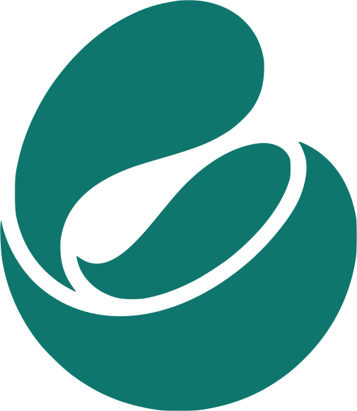

Ya en la App Store, para iPhone
Nomad: guía de viajes
Ya en la App Store, para iPhone
Destino y fechas
Lisboa
3 días
Estilo
Cultural
Gastronomía
Ritmo
Mañanas
Tardes
Noches
Tú eliges.
Día 1
Día 2
Día 3
09:30
Visita
13:00
Comida
16:30
Tour guiado
20:30
Cena
09:00
Tour guiado
13:30
Comida
16:00
Museo
21:00
Cena
10:00
Museo
14:00
Comida
17:00
Tour guiado
20:30
Cena
Y te sale el plan entero,
día a día.
Paseos y museos,
con su audioguía.
¿Sin cobertura?
Audioguía
Sigue sonando.
Las audioguías descargadas
funcionan en modo avión.
Cuatro voces.
Voz del teléfono
Kore
Puck
Charon
Escúchalas y elige.
Cena
84 €
21 €
21 €
21 €
21 €
Los gastos del grupo,
divididos.
Lugares
Guarda tus restaurantes
y sitios de interés.
Comida
Puntos de interés
Ocio nocturno

Nomad: guía de viajes

Pronto en Android
Apple, el logotipo de Apple e iPhone son marcas comerciales de Apple Inc., registradas en EE. UU. y en otros países. App Store es una marca de servicio de Apple Inc.
Enlace en el perfil